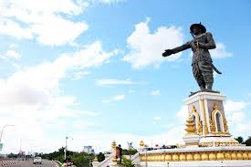
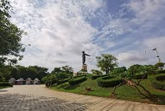

ຍ້ອນກັບ

I.ແຫຼ່ງທ່ອງທ່ຽງ ສວນເຈົ້າອະນຸວົງ.
👉
ສວນເຈົ້າອະນຸວົງ ກໍເປັນອີກສະຖານທີ່ ທ່ອງທ່ຽວໜຶ່ງ
ທີ່ສຳຄັນຂອງຊາວ ນະຄອນຫລວງວຽງຈັນ ເຊິ່ງຜູ້ຄົນມັກຈະໄປ
ສັກກາລະບູຊາ ຮູບປັ້ນປະດິດ ສະຖານອະນຸສອນ ເຈົ້າອະນຸວົງ,
ໄປຍ່າງຫລິ້ນຕາງ ພັກຜ່ອນຢ່ອນອາລົມ ແລະ ອອກກຳລັງກາຍ

👉 ຫລາຍທີ່ສຸດໃນຍາມແລງ ໂດຍສະເພາະໄວໜຸ່ມສາວ, ໄວກາງຄົນ ແລະ
ຕ່າງປະເທດ, ໃນທ້າຍອາທິດ ຜ່ານມາ ຜູ້ຂຽນໄດ້ມີ ໂອກາດພາຄອບຄົວ
ໄປຍ່າງຫລິ້ນແຄມຂອງ ພໍແຕ່ໄປຮອດ ຫາບ່ອນຈອດລົດ ເກືອບບໍ່ມີ,
ເມື່ອກ້າວເຂົ້າສູ່ ສວນເຈົ້າອະນຸວົງ ຫລຽວໄປບ່ອນໃດ ກໍເຕັມໄປດ້ວຍ ຜູ້ຄົນຍ່າງ
ສົນກັນໄປມາ ປານປາງບຸນໃຫຍ່ພຸ້ນລະ! ເຊິ່ງສະຖານທີ່ ຕັ້ງຢູ່ບ້ານຊຽງຍືນ ເມືອງຈັນທະບູລີ ນະຄອນຫລວງວຽງຈັນ.
ກົດບ່ອນນີ້ເພື່ອກັບຄືນ